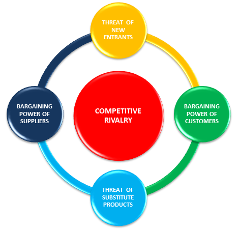
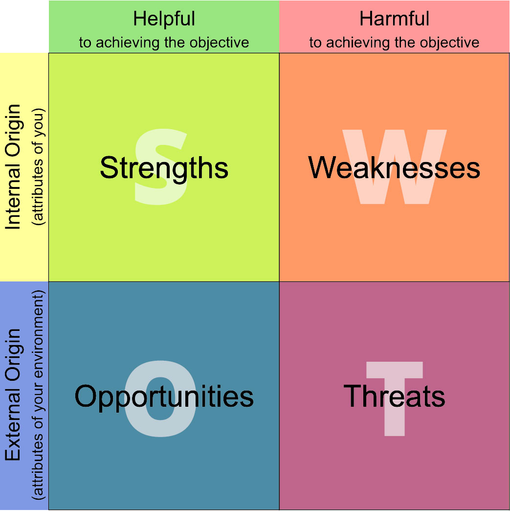

In this class we've been discussing different Marketing strategies and the concepts behind different marketing terms and why they're important. It's not in my normal comfort zone by any means so its taking some time to understand that way of thinking. It's good information to know, but I'm not sure how much I will use it in my career. It will be useful to understand why businesses do the things they do, regardless of if I think they make sense or not.
Some things assignments we have to do for the class (I'm hoping this counts as my 2nd paragraph because I wasn't sure what else to write, and I wanted a reason to practice a list)
 